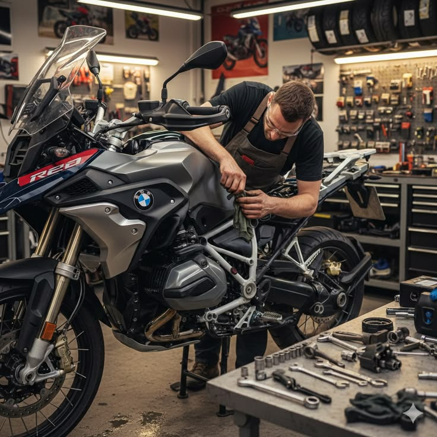

Jurusan yang mempelajari perawatan, perbaikan, dan teknologi sepeda motor modern.
Teknik Sepeda Motor (TSM) adalah jurusan yang mempelajari tentang mesin sepeda motor, sistem bahan bakar, kelistrikan, serta teknik perawatan dan perbaikan motor. Siswa dibekali keterampilan untuk siap bekerja di bengkel maupun industri otomotif.
Perawatan & perbaikan motor
Injeksi & sistem modern

"Belajar di TSM membuat saya mahir memperbaiki motor dan siap membuka bengkel sendiri."
- Rudi, Alumni 2025